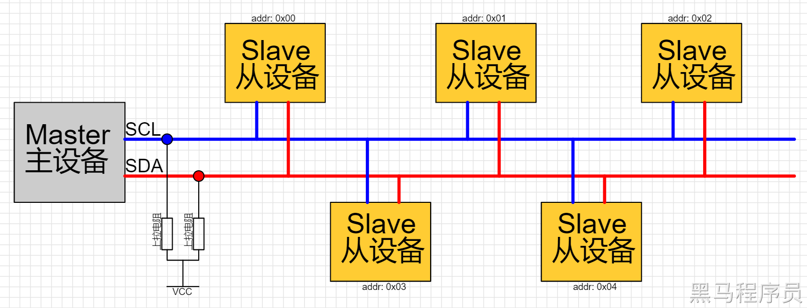
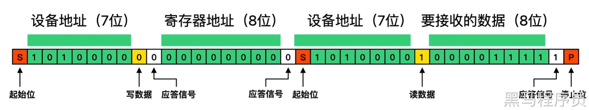
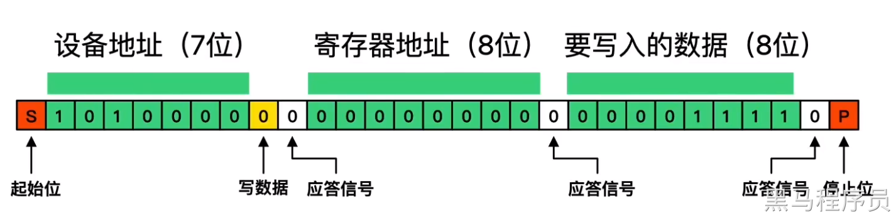
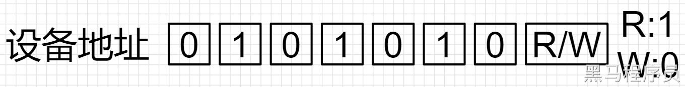
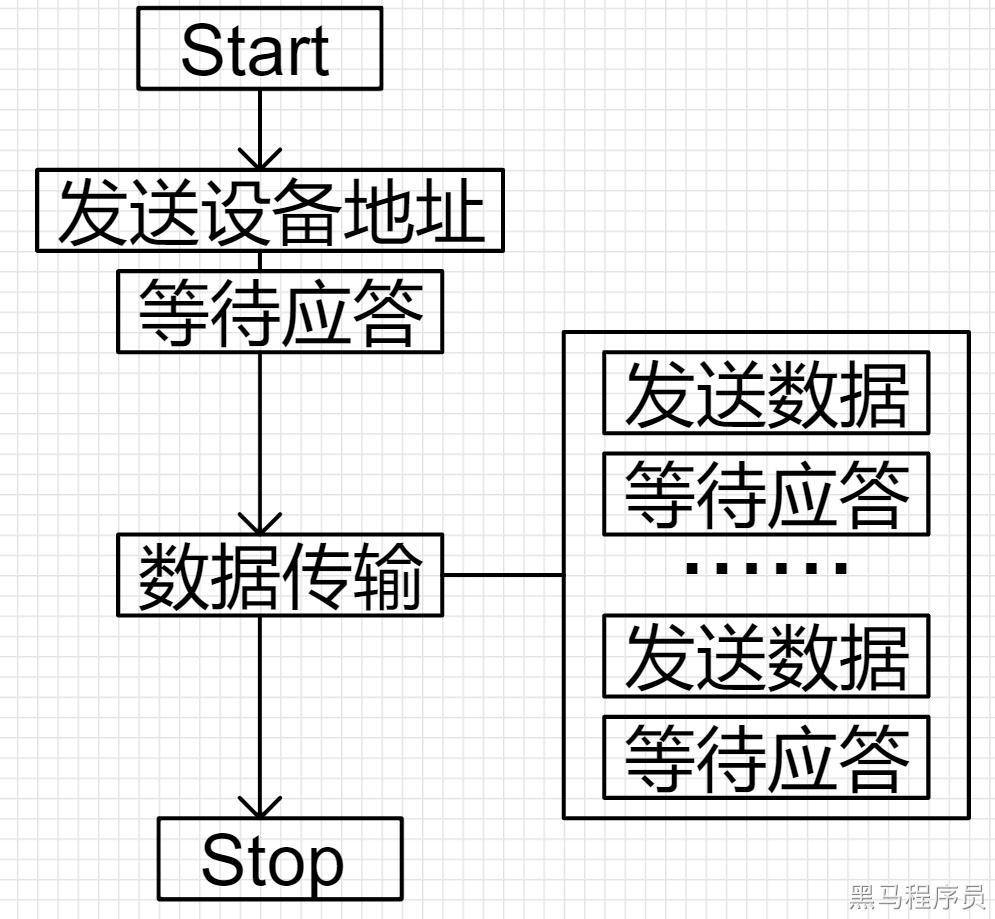
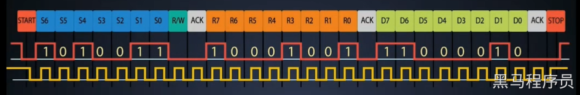

<!DOCTYPE lake>
<h2 data-lake-id="SAZel" id="SAZel"><span data-lake-id="ud34ef966" id="ud34ef966">学习目标</span></h2><ol list="u77cc66ce"><li data-lake-id="u4a53fb52" fid="ue069ee51" id="u4a53fb52"><span data-lake-id="ub3cfa61a" id="ub3cfa61a">了解I2C通讯协议</span></li><li data-lake-id="u89490af9" fid="ue069ee51" id="u89490af9"><span data-lake-id="ufc84aef7" id="ufc84aef7">理解I2C工作原理</span></li><li data-lake-id="ucafee922" fid="ue069ee51" id="ucafee922"><span data-lake-id="ufacf8b30" id="ufacf8b30">理解I2C原理图的设计</span></li></ol><h2 data-lake-id="mZobw" id="mZobw"><span data-lake-id="u8b53cfd5" id="u8b53cfd5">学习内容</span></h2><h3 data-lake-id="BpCpb" id="BpCpb"><span data-lake-id="u5af3f41a" id="u5af3f41a">基本原理</span></h3><p data-lake-id="ubca9eeee" id="ubca9eeee"><span data-lake-id="u6a03795c" id="u6a03795c">I2C（Inter-Integrated Circuit）是一种串行通信协议，用于在集成电路之间进行数据交换。它最初由飞利浦公司（Philips）开发，现已成为一种通用的串行通信协议，被广泛应用于各种电子设备和嵌入式系统中。</span></p><h4 data-lake-id="mdp6B" id="mdp6B"><span data-lake-id="u607a6525" id="u607a6525">总线结构</span></h4><p data-lake-id="u6098393a" id="u6098393a"><span data-lake-id="u3f8a8345" id="u3f8a8345">I2C总线包括两根信号线：SDA（串行数据线）和SCL（串行时钟线）。这两根信号线共用一个总线，因此在总线上可以连接多个设备。在I2C总线上，每个设备都有一个唯一的地址，用于标识设备。</span></p><p data-lake-id="u06105359" id="u06105359"><span data-lake-id="ue05ae4a4" id="ue05ae4a4">SCL线是时钟线，用于控制数据传输的速度和时序；SDA线是数据线，用于传输实际的数据.</span></p><p data-lake-id="u21a7a4a0" id="u21a7a4a0"><span data-lake-id="ue421b07d" id="ue421b07d">设备的地址通常是由设备制造商确定的，并在设备的数据手册中公布。</span></p><p data-lake-id="u6f62d99f" id="u6f62d99f"></p><p data-lake-id="ua9d89be5" id="ua9d89be5"><span data-lake-id="ua8214888" id="ua8214888">总之我们搞明白几个关键名词就可以：</span></p><ol list="uf07c53bf"><li data-lake-id="uce4e5fda" fid="u4bf5ec1d" id="uce4e5fda"><span data-lake-id="u1ebbd6ef" id="u1ebbd6ef">Master: 主设备。通常是主控MCU</span></li><li data-lake-id="u8a5ceb60" fid="u4bf5ec1d" id="u8a5ceb60"><span data-lake-id="u87856987" id="u87856987">Slave：从设备。通常是功能芯片，例如RTC时钟，陀螺仪，温湿度等等。</span></li><li data-lake-id="u919e3f9a" fid="u4bf5ec1d" id="u919e3f9a"><span data-lake-id="u9f82c6f4" id="u9f82c6f4">SCL：时钟线，控制数据传输的速度和时序。</span></li><li data-lake-id="u5ee09bd6" fid="u4bf5ec1d" id="u5ee09bd6"><span data-lake-id="u08f12e0d" id="u08f12e0d">SDA：数据线。传输数据的。</span></li><li data-lake-id="ubf58c52a" fid="u4bf5ec1d" id="ubf58c52a"><span data-lake-id="u55078e70" id="u55078e70">地址：从设备地址。主设备通过地址进行访问。在总线中，每个从设备地址唯一。</span></li></ol><h4 data-lake-id="l5FPF" id="l5FPF"><span data-lake-id="u74f9140e" id="u74f9140e">上拉电阻</span></h4><p data-lake-id="uc25827bb" id="uc25827bb"><span data-lake-id="uaddbdcf0" id="uaddbdcf0">在I2C总线中，上拉电阻的大小通常是由以下几个因素决定的：</span></p><ol list="u38ede888"><li data-lake-id="uf7699b90" fid="u166b246b" id="uf7699b90"><span data-lake-id="u3b092467" id="u3b092467">总线长度：总线长度越长，上拉电阻的阻值就应该越小，以保证信号的稳定性。这是因为，总线长度越长，线路上的电容就越大，需要更多的电流来充电和放电，因此上拉电阻的阻值也应该相应地减小。</span></li><li data-lake-id="uf97a44fe" fid="u166b246b" id="uf97a44fe"><span data-lake-id="ue0c1e207" id="ue0c1e207">总线上的设备数量：总线上连接的设备数量越多，需要更大的电流来充电和放电，以确保信号的稳定性。因此，当总线上连接的设备数量增加时，上拉电阻的阻值也应该相应地减小。</span></li><li data-lake-id="u88c6cd9c" fid="u166b246b" id="u88c6cd9c"><span data-lake-id="ue133d617" id="ue133d617">总线上设备的最高工作频率：I2C总线的时钟频率通常在100kHz到400kHz之间。如果总线上的设备需要使用更高的时钟频率，则上拉电阻的阻值应该相应地减小，以确保设备能够在规定的时间内完成数据的传输。</span></li></ol><p data-lake-id="ub7fc571e" id="ub7fc571e"><span data-lake-id="u0af6986c" id="u0af6986c">总的来说，I2C总线中上拉电阻的大小需要根据具体的情况来确定，以保证总线的稳定性和可靠性。一般来说，上拉电阻的阻值应该在1kΩ到10kΩ之间。</span></p><h4 data-lake-id="WowG5" id="WowG5"><span data-lake-id="ueb88a1c4" id="ueb88a1c4">信号电平</span></h4><p data-lake-id="u89bdf087" id="u89bdf087"><span data-lake-id="u44e48bdf" id="u44e48bdf">I2C总线的信号电平是基于器件的供电电压而定的，通常为3.3V或5V。在I2C总线上，</span><strong><span data-lake-id="u24cbfde8" id="u24cbfde8">SDA和SCL信号线都是开漏模式</span></strong><span data-lake-id="u9d837147" id="u9d837147">，因此需要外接上拉电阻，以避免信号电平的不确定性。（默认高电平）</span></p><h4 data-lake-id="HGG0l" id="HGG0l"><span data-lake-id="ub901fce4" id="ub901fce4">速度</span></h4><p data-lake-id="u2efc6426" id="u2efc6426"><span data-lake-id="u22954c22" id="u22954c22">I2C总线的速度是由其时钟频率决定的。I2C总线的时钟频率通常在100kHz到400kHz之间，其中100kHz是标准模式（Standard Mode），400kHz是快速模式（Fast Mode）。</span></p><ul list="u3e037037"><li data-lake-id="u82a9d46f" fid="u5a7c27b5" id="u82a9d46f"><span data-lake-id="u1c7a4ef9" id="u1c7a4ef9">在标准模式下，I2C总线的时钟频率为100kHz，数据传输速率最高可以达到每秒约10kbps。标准模式适用于大多数的应用场景，可以满足许多设备的数据传输需求。</span></li><li data-lake-id="u3542975b" fid="u5a7c27b5" id="u3542975b"><span data-lake-id="u05cd4fbb" id="u05cd4fbb">在快速模式下，I2C总线的时钟频率为400kHz，数据传输速率最高可以达到每秒约40kbps。快速模式适用于一些需要更高速度的应用场景，例如传感器数据采集等。</span></li></ul><p data-lake-id="u25272fb3" id="u25272fb3"><span data-lake-id="u73cc6cf7" id="u73cc6cf7">此外，I2C总线还支持更高速度的高速模式（High Speed Mode）和超高速模式（Ultra-Fast Mode），它们的时钟频率分别为</span><code data-lake-id="u43b9e6b4" id="u43b9e6b4"><span data-lake-id="u85294ddd" id="u85294ddd">1MHz</span></code><span data-lake-id="u249dfea8" id="u249dfea8">和</span><code data-lake-id="u6a7e49a5" id="u6a7e49a5"><span data-lake-id="u245e0dc7" id="u245e0dc7">5MHz</span></code><span data-lake-id="uc246cf2d" id="uc246cf2d">。这些高速模式通常用于一些需要非常高速数据传输的应用场景。</span></p><p data-lake-id="uaede8994" id="uaede8994"><span data-lake-id="u8eaa0bc6" id="u8eaa0bc6">需要注意的是，总线的速度不仅受时钟频率的影响，还受到总线长度、电容负载、上拉电阻大小等因素的影响。因此，在实际应用中，需要根据具体情况来确定总线的速度以确保数据传输的稳定性和可靠性。</span></p><h3 data-lake-id="Cyrgx" id="Cyrgx"><span data-lake-id="ua8cfcc79" id="ua8cfcc79">STC8H芯片I2C引脚</span></h3><p data-lake-id="u43098a9a" id="u43098a9a"><span data-lake-id="ud8522b89" id="ud8522b89">STC8H内置了一组I2C接口。</span></p><table class="lake-table" data-lake-id="cHgZM" id="cHgZM" margin="true" style="width: 352px" width-mode="contain"><colgroup><col width="108"/><col width="122"/><col width="122"/></colgroup><tbody><tr data-lake-id="u18f1624d" id="u18f1624d"><td data-lake-id="u50fd07ee" id="u50fd07ee" style="background-color: #FAFAFA; vertical-align: middle"><p data-lake-id="ucf40a470" id="ucf40a470" style="text-align: center"><strong><span data-lake-id="u341fa015" id="u341fa015">I2C接口</span></strong></p></td><td data-lake-id="ud7ee63c9" id="ud7ee63c9" style="background-color: #FAFAFA; vertical-align: middle"><p data-lake-id="ue8daa239" id="ue8daa239" style="text-align: center"><strong><span data-lake-id="u315eb679" id="u315eb679">SCL</span></strong></p></td><td data-lake-id="u8d1e1abb" id="u8d1e1abb" style="background-color: #FAFAFA; vertical-align: middle"><p data-lake-id="uad8e8a8f" id="uad8e8a8f" style="text-align: center"><strong><span data-lake-id="u984b7568" id="u984b7568">SDA</span></strong></p></td></tr><tr data-lake-id="u3646b697" id="u3646b697"><td data-lake-id="u3451e655" id="u3451e655" rowspan="3" style="vertical-align: middle"><p data-lake-id="uaf4ddb83" id="uaf4ddb83" style="text-align: center"><span data-lake-id="u821c63d4" id="u821c63d4">I2C1</span></p></td><td data-lake-id="ue904f54b" id="ue904f54b" style="vertical-align: middle"><p data-lake-id="ub4906ce9" id="ub4906ce9" style="text-align: center"><span data-lake-id="ud1b427be" id="ud1b427be">P1.5</span></p></td><td data-lake-id="ue76b53b2" id="ue76b53b2" style="vertical-align: middle"><p data-lake-id="u90ca26d3" id="u90ca26d3" style="text-align: center"><span data-lake-id="ub82932a8" id="ub82932a8">P1.4</span></p></td></tr><tr data-lake-id="ud4b8f4ef" id="ud4b8f4ef"><td data-lake-id="u024b0cb3" id="u024b0cb3" style="vertical-align: middle"><p data-lake-id="u25f800b7" id="u25f800b7" style="text-align: center"><span data-lake-id="uc8d2338b" id="uc8d2338b">P2.5</span></p></td><td data-lake-id="u9756c338" id="u9756c338" style="vertical-align: middle"><p data-lake-id="u1ebcc384" id="u1ebcc384" style="text-align: center"><span data-lake-id="u073b3c1a" id="u073b3c1a">P2.4</span></p></td></tr><tr data-lake-id="uc568ae8a" id="uc568ae8a"><td data-lake-id="u1016594a" id="u1016594a" style="vertical-align: middle"><p data-lake-id="ucbee6d01" id="ucbee6d01" style="text-align: center"><span data-lake-id="u8e4c50f1" id="u8e4c50f1">P3.2</span></p></td><td data-lake-id="u183a62d7" id="u183a62d7" style="vertical-align: middle"><p data-lake-id="u7440462f" id="u7440462f" style="text-align: center"><span data-lake-id="u88a627b8" id="u88a627b8">P3.3</span></p></td></tr></tbody></table><h3 data-lake-id="cqUQ0" id="cqUQ0"><span data-lake-id="u9639944c" id="u9639944c">I2C开发流程</span></h3><p data-lake-id="ua1e1fadf" id="ua1e1fadf"><span data-lake-id="u0baff6f2" id="u0baff6f2">总结起来，I2C总线编程开发步骤为以下：</span></p><ol list="u789e86b8"><li data-lake-id="ud068058c" fid="u04910d06" id="ud068058c"><span data-lake-id="u3950a858" id="u3950a858">引脚功能配置</span></li><li data-lake-id="u4b30f12e" fid="u04910d06" id="u4b30f12e"><span data-lake-id="ue86255fc" id="ue86255fc">I2C配置</span></li><li data-lake-id="uef29b172" fid="u04910d06" id="uef29b172"><span data-lake-id="u46f10a95" id="u46f10a95">总线数据读取或写入</span></li></ol><p data-lake-id="ud32521b5" id="ud32521b5"><span data-lake-id="u004c31f0" id="u004c31f0">I2C引脚配置为</span><strong><span data-lake-id="ua261a6c0" id="ua261a6c0">开漏（OD）模式</span></strong><span data-lake-id="u00bbd6bc" id="u00bbd6bc">。</span></p><p data-lake-id="u5dcdc273" id="u5dcdc273"><span data-lake-id="uf3cb79a3" id="uf3cb79a3">基本上所有的芯片平台都是这种流程，具体的代码写法可能有所差异，但是道理相通。</span></p><h4 data-lake-id="DrHaB" id="DrHaB"><span data-lake-id="u26ce2294" id="u26ce2294">STC8H的I2C配置</span></h4><p data-lake-id="uefac6aeb" id="uefac6aeb"><span data-lake-id="u46ed72ec" id="u46ed72ec">记得开启扩展寄存器使能:</span></p><span class="yuque-card-unsupported">[codeblock]</span><p data-lake-id="u99763658" id="u99763658"><span data-lake-id="u8f3b6c2d" id="u8f3b6c2d">配置IO口为开漏模式</span></p><span class="yuque-card-unsupported">[codeblock]</span><p data-lake-id="u70e56f57" id="u70e56f57"><span data-lake-id="ub7abcdcd" id="ub7abcdcd">以下是STC8H的I2C配置代码。</span></p><ol list="u9de9b381"><li data-lake-id="u9cb6df2c" fid="uf1f117cd" id="u9cb6df2c"><code data-lake-id="ueda84dbe" id="ueda84dbe"><span data-lake-id="u9b5096b2" id="u9b5096b2">I2C.c</span></code><span data-lake-id="u51e26645" id="u51e26645"> </span><code data-lake-id="u6272aa08" id="u6272aa08"><span data-lake-id="u90d55569" id="u90d55569">I2C.h</span></code></li><li data-lake-id="uf821b0a9" fid="uf1f117cd" id="uf821b0a9"><code data-lake-id="uf1632469" id="uf1632469"><span data-lake-id="u850967da" id="u850967da">NVIC.c</span></code><span data-lake-id="ue3c692a3" id="ue3c692a3"> </span><code data-lake-id="ucf6c4828" id="ucf6c4828"><span data-lake-id="u1385fb32" id="u1385fb32">NVIC.h</span></code></li><li data-lake-id="u3d00d279" fid="uf1f117cd" id="u3d00d279"><code data-lake-id="ub9515707" id="ub9515707"><span data-lake-id="u499fdc14" id="u499fdc14">Switch.h</span></code></li></ol><span class="yuque-card-unsupported">[codeblock]</span><ul list="u6b1a1c9e"><li data-lake-id="u2587c41a" fid="ud871343a" id="u2587c41a"><span data-lake-id="u503e77af" id="u503e77af">I2C_MODE：模式，当前是Master还是Slave。</span></li><li data-lake-id="u34434768" fid="ud871343a" id="u34434768"><span data-lake-id="ued037d46" id="ued037d46">I2C_Speed: 速度。100k或者400k，通过</span><code data-lake-id="u97505458" id="u97505458"><span data-lake-id="u038f74fe" id="u038f74fe">总线速度=Fosc/2/(Speed*2+4)</span></code><span data-lake-id="uee4aa70e" id="uee4aa70e">公式计算。</span></li></ul><h4 data-lake-id="JfjP5" id="JfjP5"><span data-lake-id="uddee88c2" id="uddee88c2">STC8H的I2C读取</span></h4><p data-lake-id="udd35a7a9" id="udd35a7a9"><span data-lake-id="u37cfec5d" id="u37cfec5d">stc8h提供了库函数，对I2C进行读取和写入。</span></p><p data-lake-id="u82ac9e5f" id="u82ac9e5f"><span data-lake-id="u61f0b9af" id="u61f0b9af">标准的读数据帧:</span></p><p data-lake-id="u4e05a388" id="u4e05a388"></p><p data-lake-id="ub02216a1" id="ub02216a1"><span data-lake-id="u2bbd56c7" id="u2bbd56c7">库函数中的读取 </span><code data-lake-id="uc5b62c93" id="uc5b62c93"><span data-lake-id="u98f66719" id="u98f66719">I2C_ReadNbyte</span></code></p><span class="yuque-card-unsupported">[codeblock]</span><h4 data-lake-id="TY8R3" id="TY8R3"><span data-lake-id="u0a5782ef" id="u0a5782ef">STC8H的I2C写入</span></h4><p data-lake-id="uaa9ea89c" id="uaa9ea89c"><span data-lake-id="u3ad7f27b" id="u3ad7f27b">标砖的写数据帧:</span></p><p data-lake-id="u1dff6ceb" id="u1dff6ceb"></p><p data-lake-id="uccd959a5" id="uccd959a5"><span data-lake-id="u6bdc0a82" id="u6bdc0a82">库函数中的写入 </span><code data-lake-id="u59fc9684" id="u59fc9684"><span data-lake-id="uc44f390e" id="uc44f390e">I2C_WriteNbyte</span></code></p><span class="yuque-card-unsupported">[codeblock]</span><h3 data-lake-id="R6gzC" id="R6gzC"><span data-lake-id="u6fc6e200" id="u6fc6e200">I2C地址问题</span></h3><p data-lake-id="uf2d06239" id="uf2d06239"><span data-lake-id="u154d490c" id="u154d490c">开发过程中，经常有</span><code data-lake-id="u3829e7c0" id="u3829e7c0"><span data-lake-id="uc2d3d5fb" id="uc2d3d5fb">address</span></code><span data-lake-id="u7df2a611" id="u7df2a611">问题。由于翻译问题，和一些程序员编码命名问题，导致我们经常把</span><code data-lake-id="u357fdce6" id="u357fdce6"><span data-lake-id="u378064d0" id="u378064d0">address</span></code><span data-lake-id="u030dd0ba" id="u030dd0ba">概念混淆。</span></p><p data-lake-id="ua9b78270" id="ua9b78270"><span data-lake-id="u390651c2" id="u390651c2">通常我们关心的地址有:</span></p><ol list="ub5d1e514"><li data-lake-id="uef9052b0" fid="u8dd86a9b" id="uef9052b0"><span data-lake-id="ud029104e" id="ud029104e">设备地址：具体说法就是从设备的访问地址。</span></li><li data-lake-id="udd157c45" fid="u8dd86a9b" id="udd157c45"><span data-lake-id="u52c9ebba" id="u52c9ebba">设备中要访问的地址：从设备中的寄存器地址。</span></li></ol><h4 data-lake-id="QoPhO" id="QoPhO"><span data-lake-id="u9bb8c380" id="u9bb8c380">设备地址</span></h4><p data-lake-id="ud1764834" id="ud1764834"><span data-lake-id="udecdb381" id="udecdb381">设备地址其实包含了两个地址，一个是读取从设备时的地址，一个是向从设备写入数据时的地址。这两个地址还不一样。这两个地址的来源需要翻看</span><code data-lake-id="ue30943a9" id="ue30943a9"><span data-lake-id="u91aa37e4" id="u91aa37e4">从设备</span></code><span data-lake-id="ufb80bb86" id="ufb80bb86">的芯片手册，进行查看。</span></p><p data-lake-id="u3b880c69" id="u3b880c69"><span data-lake-id="u4f494fe1" id="u4f494fe1">设备地址是8个位的，最后一位表示读还是写，1表示读，0表示写。(1读0写这个是默认的，但也不排除一些奇葩厂商芯片设计自定义反向操作，一切以实际为准)</span></p><p data-lake-id="ue6061872" id="ue6061872"></p><p data-lake-id="u63359c49" id="u63359c49"><span data-lake-id="u6026b5bd" id="u6026b5bd">上图中，就是一个I2C的从设备地址，最后一位决定是读还是写。</span></p><p data-lake-id="u049b2d5f" id="u049b2d5f"><span data-lake-id="u50f4c3b8" id="u50f4c3b8">我们在查询用户手册的过程中，必须确认这个地址，但通常会碰到一些问题：</span></p><ol list="uaaa2620c"><li data-lake-id="u791b4431" fid="u3bed4bea" id="u791b4431"><span data-lake-id="u21d5cea6" id="u21d5cea6">只提供一个地址。</span></li></ol><p data-lake-id="u1d3cd274" id="u1d3cd274" style="padding-left: 2em"><span data-lake-id="u43a5620c" id="u43a5620c">通常会明确说是读地址还是写地址，一定要查阅清楚。还有就是只提供了一个地址，没有明确说明通常是前七位组成的地址。</span></p><ol list="u0695b087" start="2"><li data-lake-id="uf5372890" fid="u0b59dd6a" id="uf5372890"><span data-lake-id="u028512c3" id="u028512c3">1种类型的从设备多个串联。一种类型的芯片通常地址是相同的，但是要访问具体的从设备需要唯一地址，否则不能正常工作。这个时候需要芯片支持地址扩展。</span></li><li data-lake-id="ua4f9e6be" fid="u0b59dd6a" id="ua4f9e6be"><span data-lake-id="u8f9e4d54" id="u8f9e4d54">多种类型的从设备地址相同。这个就需要从设备可以配置改地址的方式。</span></li></ol><h4 data-lake-id="q7g9V" id="q7g9V"><span data-lake-id="u9b518608" id="u9b518608">从设备寄存器地址</span></h4><p data-lake-id="u6b843373" id="u6b843373"><span data-lake-id="u96d54cf0" id="u96d54cf0">通常我们通过I2C总线要去写入或者读取的就是这些寄存器地址。对于寄存器地址数据含义，需要阅读芯片手册。</span></p><p data-lake-id="u52a6bb0f" id="u52a6bb0f"><br/></p><h3 data-lake-id="J1sYw" id="J1sYw"><span data-lake-id="uec68d611" id="uec68d611">I2C通讯流程（了解）</span></h3><p data-lake-id="u1d9b985b" id="u1d9b985b"><span data-lake-id="ud3aaa2ea" id="ud3aaa2ea">对于一些已经提供了库函数的芯片平台，使用I2C是非常容易的，不要从底层做起，因为有良好的API支持。</span></p><p data-lake-id="u676de57f" id="u676de57f"><span data-lake-id="u59957004" id="u59957004">但是对于没有支持的，或者是需要清楚的了解过程的，需要去理解这个流程。</span></p><p data-lake-id="u067c949b" id="u067c949b"><span data-lake-id="u780686a9" id="u780686a9">I2C通信流程如下：</span></p><ol list="ub1885e0b"><li data-lake-id="u93833055" fid="u80a945c4" id="u93833055"><span data-lake-id="ubd85f28a" id="ubd85f28a">主设备发送起始信号（Start）。</span></li><li data-lake-id="u34714282" fid="u80a945c4" id="u34714282"><span data-lake-id="u2d867487" id="u2d867487">主设备发送从设备地址和读/写位，请求与从设备建立通信。</span></li><li data-lake-id="ubd72bdae" fid="u80a945c4" id="ubd72bdae"><span data-lake-id="ufad10f18" id="ufad10f18">从设备返回应答信号（ACK）。</span></li><li data-lake-id="ufe02c2e0" fid="u80a945c4" id="ufe02c2e0"><span data-lake-id="ub4d0c383" id="ub4d0c383">主设备发送要读/写的数据。</span></li><li data-lake-id="ucccbaaaf" fid="u80a945c4" id="ucccbaaaf"><span data-lake-id="u6f0f3bee" id="u6f0f3bee">从设备返回应答信号（ACK）。</span></li><li data-lake-id="u8f20414e" fid="u80a945c4" id="u8f20414e"><span data-lake-id="ucf925767" id="ucf925767">通信结束时，主设备发送停止信号（Stop）。</span></li></ol><p data-lake-id="u732cdb1e" id="u732cdb1e"><span data-lake-id="u13c06e09" id="u13c06e09">下面是每个步骤的详细说明：</span></p><ol list="u71389bd1"><li data-lake-id="ubd169d6a" fid="u0838e00c" id="ubd169d6a"><span data-lake-id="u616d537c" id="u616d537c">起始信号（Start）：主设备通过拉低SDA线而将SDA线从高电平转换成低电平，同时将SCL线拉高。这表示通信开始了。</span></li><li data-lake-id="u45c929ac" fid="u0838e00c" id="u45c929ac"><span data-lake-id="ub480e0eb" id="ub480e0eb">从设备地址和读/写位：主设备发送从设备地址和读/写位，告诉从设备要进行读或写操作。I2C总线支持多个从设备，因此地址是从设备的标识符。地址的最低位表示通信模式，0表示写模式，1表示读模式。</span></li><li data-lake-id="u102c3229" fid="u0838e00c" id="u102c3229"><span data-lake-id="ub0416492" id="ub0416492">应答信号（ACK）：从设备接收到地址后，会发送应答信号（ACK）表示已经准备好接收或发送数据。如果没有设备响应主设备发送的地址，则通信失败。</span></li><li data-lake-id="ua4439f94" fid="u0838e00c" id="ua4439f94"><span data-lake-id="uf54d2e24" id="uf54d2e24">发送数据：主设备向从设备发送要写入的数据。</span></li><li data-lake-id="u6f699a42" fid="u0838e00c" id="u6f699a42"><span data-lake-id="u706b30e5" id="u706b30e5">应答信号（ACK）：从设备接收到数据后，发送应答信号（ACK）表示已经成功接收数据。如果从设备没有成功接收到数据，将发送非应答信号（NACK）。</span></li><li data-lake-id="uf7a5a882" fid="u0838e00c" id="uf7a5a882"><span data-lake-id="uf4465358" id="uf4465358">停止信号（Stop）：通信结束后，主设备发送停止信号（Stop），将SDA线从低电平拉到高电平，同时将SCL线拉高。这表示通信结束了。</span></li></ol><p data-lake-id="u8465e081" id="u8465e081"><span data-lake-id="u64cd9f85" id="u64cd9f85">需要注意的是，在步骤2和步骤4中，如果主设备发送的数据超过了从设备的缓存，从设备将发送非应答信号（NACK）表示数据传输失败。主设备在收到非应答信号（NACK）后将终止通信。</span></p><p data-lake-id="uf8f580a2" id="uf8f580a2"></p><p data-lake-id="ue7a5ed6f" id="ue7a5ed6f"><span data-lake-id="ubf0ff7b7" id="ubf0ff7b7">举例: </span></p><p data-lake-id="ua16035dd" id="ua16035dd"></p><p data-lake-id="u51f0c440" id="u51f0c440"><br/></p>